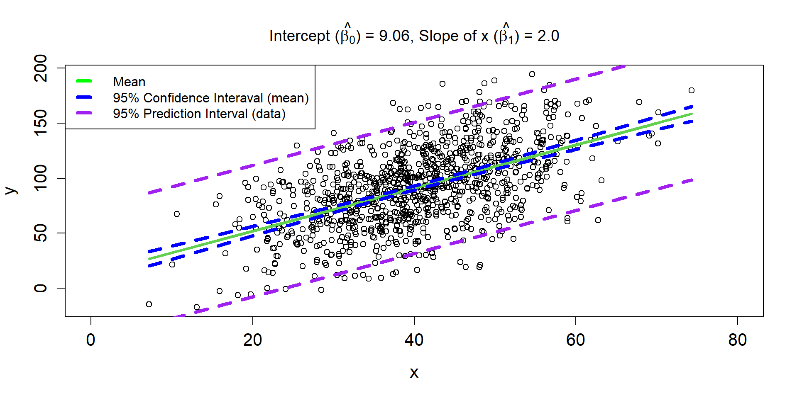

Linear Regression
Objectives
- linear regression fundamentals
- assumptions
- lm / glm function
- confidence intervals
- categorical and continuous independent variables
- additive and interactions b/w variables
Linear Regression (motivation)

Linear Regression (Equation)

Linear Regression (Equation 2)
\[ y_{i} \sim \text{Normal}(\mu_{i}, \sigma)\\ \mu_{i} = \beta_0 + \beta_1 \times x_i \]
Linear Regression Line 1
Linear Regression Line 2

Linear Regression Line 3
Visual

Assumptions
Independence of the errors
Correlation(\(\epsilon_{i}\),\(\epsilon_{j}\)) = 0, \(\forall\) pairs of \(i\) and \(j\)
This means that knowing how far observation \(i\) will be from the true regression line tells us nothing about how far observation \(j\) will be from the regression line.
Assumptions
Homogeniety of the variance
var(\(\epsilon_{i}\)) = \(\sigma^2\)
Constancy in the scatter of observations above and below the line
Assumptions
Linearity
\[
E[y_i|x_i] = \mu_i = \beta_0 + \beta_1 \times x_i \\
\]
The hypothesis about the variables included in the model (e.g., \(x_i\)) characterizes the mean well.
Assumptions
Normality
\[
\epsilon_i \sim \text{Normal}(0,\sigma)
\]
Each \(i^{th}\) residual
- comes from a Normal distribution with a mean of zero
- is symmetrically disributed around zero
- varies around zero by \(\sigma\), which is the same for each residual.
Assumption Violations
Robustness
Linearity and constant variance are often more important than the assumption of normality (see e.g., Knief & Forstmeier, 2021 and references therein)
This is especially true for large sample sizes
Intercept-Only Model
\[ y_{i} \sim \text{Normal}(\mu_{i}, \sigma^2)\\ \mu_{i} = \beta_0 \]
Simulate Intercept-Only Model
Visualize Intercept-Only Model

Fit Intercept-Only Model
Fit Intercept-Only Model
Call:
glm(formula = y ~ 1, family = gaussian(link = identity))
Coefficients:
Estimate Std. Error t value Pr(>|t|)
(Intercept) 9.9138 0.1765 56.16 <2e-16 ***
---
Signif. codes: 0 '***' 0.001 '**' 0.01 '*' 0.05 '.' 0.1 ' ' 1
(Dispersion parameter for gaussian family taken to be 3.116437)
Null deviance: 308.53 on 99 degrees of freedom
Residual deviance: 308.53 on 99 degrees of freedom
AIC: 400.45
Number of Fisher Scoring iterations: 2Fitted-values Intercept-Only Model
$fit
1 2 3 4 5 6 7 8
9.913821 9.913821 9.913821 9.913821 9.913821 9.913821 9.913821 9.913821
9 10 11 12 13 14 15 16
9.913821 9.913821 9.913821 9.913821 9.913821 9.913821 9.913821 9.913821
17 18 19 20 21 22 23 24
9.913821 9.913821 9.913821 9.913821 9.913821 9.913821 9.913821 9.913821
25 26 27 28 29 30 31 32
9.913821 9.913821 9.913821 9.913821 9.913821 9.913821 9.913821 9.913821
33 34 35 36 37 38 39 40
9.913821 9.913821 9.913821 9.913821 9.913821 9.913821 9.913821 9.913821
41 42 43 44 45 46 47 48
9.913821 9.913821 9.913821 9.913821 9.913821 9.913821 9.913821 9.913821
49 50 51 52 53 54 55 56
9.913821 9.913821 9.913821 9.913821 9.913821 9.913821 9.913821 9.913821
57 58 59 60 61 62 63 64
9.913821 9.913821 9.913821 9.913821 9.913821 9.913821 9.913821 9.913821
65 66 67 68 69 70 71 72
9.913821 9.913821 9.913821 9.913821 9.913821 9.913821 9.913821 9.913821
73 74 75 76 77 78 79 80
9.913821 9.913821 9.913821 9.913821 9.913821 9.913821 9.913821 9.913821
81 82 83 84 85 86 87 88
9.913821 9.913821 9.913821 9.913821 9.913821 9.913821 9.913821 9.913821
89 90 91 92 93 94 95 96
9.913821 9.913821 9.913821 9.913821 9.913821 9.913821 9.913821 9.913821
97 98 99 100
9.913821 9.913821 9.913821 9.913821
$se.fit
[1] 0.1765343 0.1765343 0.1765343 0.1765343 0.1765343 0.1765343 0.1765343
[8] 0.1765343 0.1765343 0.1765343 0.1765343 0.1765343 0.1765343 0.1765343
[15] 0.1765343 0.1765343 0.1765343 0.1765343 0.1765343 0.1765343 0.1765343
[22] 0.1765343 0.1765343 0.1765343 0.1765343 0.1765343 0.1765343 0.1765343
[29] 0.1765343 0.1765343 0.1765343 0.1765343 0.1765343 0.1765343 0.1765343
[36] 0.1765343 0.1765343 0.1765343 0.1765343 0.1765343 0.1765343 0.1765343
[43] 0.1765343 0.1765343 0.1765343 0.1765343 0.1765343 0.1765343 0.1765343
[50] 0.1765343 0.1765343 0.1765343 0.1765343 0.1765343 0.1765343 0.1765343
[57] 0.1765343 0.1765343 0.1765343 0.1765343 0.1765343 0.1765343 0.1765343
[64] 0.1765343 0.1765343 0.1765343 0.1765343 0.1765343 0.1765343 0.1765343
[71] 0.1765343 0.1765343 0.1765343 0.1765343 0.1765343 0.1765343 0.1765343
[78] 0.1765343 0.1765343 0.1765343 0.1765343 0.1765343 0.1765343 0.1765343
[85] 0.1765343 0.1765343 0.1765343 0.1765343 0.1765343 0.1765343 0.1765343
[92] 0.1765343 0.1765343 0.1765343 0.1765343 0.1765343 0.1765343 0.1765343
[99] 0.1765343 0.1765343
$residual.scale
[1] 1.765343Confidence Intervals Intercept-Only Model
What is a CI?
“A confidence interval for a parameter is an interval computed using sample data by a method that will contain the parameter for a specified proportion of all samples. The success rate (proportion of all samples whose intervals contain the parameter) is known as the confidence level.” R. H. Lock et al. (2020)
What is a CI?
Key
- the parameter we are trying to estimate is a fixed unknown (i.e., it is not varying across samples)
- the endpoints of our confidence interval are random and will change every time we collect a new data set (the endpoints themselves actually have a sampling distribution!)
What is a CI?

Bootstrapping
See, Stats4Ecologists
Instead of relying on the 95% intervals from an assumed normal distribution, we will create a distribution by resampling our data.
Bootstrapping (idea)

Bootstrapping (idea)

Bootstrapping (idea)

Bootstrapping (code)
# Setup
nboot <- 1000 # number of bootstrap samples
nobs <- length(y)
bootcoefs <- rep(NA, nboot)
# Start loop
for(i in 1:nboot){
set.seed(43243+i)
# Create bootstrap data set by sampling original observations w/ replacement
bootdat <- y[sample(1:nobs, nobs, replace=TRUE)]
# Calculate bootstrap statistic
glmboot <- glm(bootdat ~ 1)
bootcoefs[i] <- coef(glmboot)
}Bootstrapping (code)
Bootstrapping (code)
Comparison
Categorical Variable w/ 2 levels
\[ y_{i} \sim \text{Normal}(\mu_{i}, \sigma^2)\\ \mu_{i} = \beta_0+\beta_1\times x_i \] where \(x_i\) is either a zero or one, indicating whether the \(i^{th}\) row is from site 1 (0) or site 2 (1).
This is called Dummy Coding.
Categorical Variable w/ 2 levels
Side-Bar: Maximum Likelihood Optimization
Use our function in an optimization function
#use optim with initial values and define the lower and upper limits of the possible values
fit1 <- optim(
par = c(0, 0,1),
fn = neg.log.like,
method = "L-BFGS-B",
lower = c(-100, -100, 0.01),
upper = c(400, 400, 100)
)
fit1$par[1] 50.511067 -21.366842 3.445873Categorical Variable w/ 2 levels
Call:
glm(formula = y ~ x)
Coefficients:
Estimate Std. Error t value Pr(>|t|)
(Intercept) 50.5111 0.4923 102.61 <2e-16 ***
xSite 2 -21.3669 0.6962 -30.69 <2e-16 ***
---
Signif. codes: 0 '***' 0.001 '**' 0.01 '*' 0.05 '.' 0.1 ' ' 1
(Dispersion parameter for gaussian family taken to be 12.11631)
Null deviance: 12601.0 on 99 degrees of freedom
Residual deviance: 1187.4 on 98 degrees of freedom
AIC: 537.22
Number of Fisher Scoring iterations: 2Relevel
We can manipulate the factor levels of \(x\) to indicate that site 1 is denoted by a 1 now and site 2 is denoted by a 0.
Categorical Variable w/ 4 levels
Dummy Coding
\[ y_{i} \sim \text{Normal}(\mu_{i}, \sigma^2)\\ \mu_{i} = \beta_0+(\beta_1\times x_{1,i}) + (\beta_2\times x_{2,i}) + (\beta_3\times x_{3,i}) \] \(x_{1,i} =\) indicator of site 2 (1) or not (0)
\(x_{2,i} =\) indicator of site 3 (1) or not (0)
\(x_{3,i} =\) indicator of site 4 (1) or not (0)
Categorical Variable w/ 4 levels
[1] "Site 1" "Site 2" "Site 3" "Site 4" (Intercept) xSite 2 xSite 3 xSite 4
1 1 0 0 0
2 1 1 0 0
3 1 0 1 0
4 1 0 0 1
5 1 0 0 0
6 1 1 0 0Effect Coding w/ 4 levels
#Use effect coding to make the intercept the grand mean
model3.2=glm(y~x,contrasts = list(x = contr.sum))
# Intercept = grand mean of group-means
# Coef 1 = effect difference of Site 1 from Grand Mean
# Coef 2 = effect difference of Site 2 from Grand Mean
# Coef 3 = effect difference of Site 3 from Grand Mean
coef(model3.2)(Intercept) x1 x2 x3
19.827643 30.768114 8.853654 -169.401216 [1] 129.7794Continuous Variable
ADD here and mean-centering
Additive Model
Categorical (2 levels) and Continuous Variable
\[ y_{i} \sim \text{Normal}(\mu_{i}, \sigma^2)\\ \mu_{i} = \beta_0+(\beta_1\times x_{1,i}) + (\beta_2\times x_{2,i}) \] \(x_{1,i} =\) indicator of site 2 (1) or not (0)
\(x_{2,i} =\) is a continuous numeric value
Additive Model
[1] "Site 1" "Site 2"#Simulate x2 variable
set.seed(54334)
x2=rpois(n,100)
#Parameters
b0=50
b1=-50
b2=4
#Mean
mu=b0+b1*x.var+b2*x2
#Simualte Date
set.seed(43243)
y=rnorm(n,mean=mu,sd=50)
# fit the model
model4=glm(y~x+x2)
coef(model4)(Intercept) xSite 2 x2
96.615158 -66.748462 3.597896
Call:
glm(formula = y ~ x + x2)
Coefficients:
Estimate Std. Error t value Pr(>|t|)
(Intercept) 96.6152 41.8430 2.309 0.0231 *
xSite 2 -66.7485 8.7115 -7.662 1.39e-11 ***
x2 3.5979 0.4137 8.697 8.70e-14 ***
---
Signif. codes: 0 '***' 0.001 '**' 0.01 '*' 0.05 '.' 0.1 ' ' 1
(Dispersion parameter for gaussian family taken to be 1894.243)
Null deviance: 428531 on 99 degrees of freedom
Residual deviance: 183742 on 97 degrees of freedom
AIC: 1043.4
Number of Fisher Scoring iterations: 2Additive Model Plot 1
Additive Model Plot 2

Interaction Model
Categorical (2 levels) and Continuous Variable
\[ y_{i} \sim \text{Normal}(\mu_{i}, \sigma^2)\\ \mu_{i} = \beta_0+(\beta_1\times x_{1,i}) + (\beta_2\times x_{2,i}) + (\beta_3*(x_{1,i}\times x_{2,i})) \] \(x_{1,i} =\) indicator of site 2 (1) or not (0)
\(x_{2,i} =\) is a numeric value
\(x_{1,i} \times x_{2,i}=\) is zero for site 1 values and the numeric value for site 2 values
Interaction Model
Categorical (2 levels) and Continuous Variable
[1] "Site 1" "Site 2" x.var=model.matrix(~x)[,2]
set.seed(5453)
x2=rpois(n,100)
# Parameters
b0=50
b1=-50
b2=4
b3=-20
# Mean
mu = b0+b1*x.var+b2*x2+b3*(x.var*x2)
#Simulate Data
set.seed(43243)
y=rnorm(n,mean=mu,sd=10)
# fit the model
model5=glm(y~x2*x)
model5.1=glm(y~x+x2+x:x2)
#comparison
rbind(coef(model5),coef(model5.1)) (Intercept) x2 xSite 2 x2:xSite 2
[1,] 47.51796 4.037598 -60.864156 -19.92472
[2,] 47.51796 -60.864156 4.037598 -19.92472. . .
Interaction Model
Call:
glm(formula = y ~ x2 * x)
Coefficients:
Estimate Std. Error t value Pr(>|t|)
(Intercept) 47.5180 12.2030 3.894 0.000182 ***
x2 4.0376 0.1214 33.258 < 2e-16 ***
xSite 2 -60.8642 17.6712 -3.444 0.000850 ***
x2:xSite 2 -19.9247 0.1765 -112.881 < 2e-16 ***
---
Signif. codes: 0 '***' 0.001 '**' 0.01 '*' 0.05 '.' 0.1 ' ' 1
(Dispersion parameter for gaussian family taken to be 76.60874)
Null deviance: 1.0550e+08 on 99 degrees of freedom
Residual deviance: 7.3544e+03 on 96 degrees of freedom
AIC: 723.58
Number of Fisher Scoring iterations: 2Interaction Model Plot

Evaluating Assumptions
Largely done based on the residuals
\(y_{i} - \hat{y}_{i}\)

Linearity & Variance Assumption

Normality Assumption
Top-left: Normal Q-Q plot. Quantiles of the standardized residuals versus quantiles of a standard normal distribution.

Notes
The scale-location plot is very similar to residuals vs fitted, but simplifies analysis of the homoskedasticity assumption. It takes the square root of the absolute value of standardized residuals instead of plotting the residuals themselves.
Leverage refers to the extent to which the coefficients in the regression model would change if a particular observation was removed from the dataset.
Exploring Assumptions
Nicer looking Plots